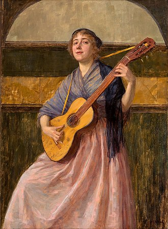

Ballads are songs that tell a story one way or another. They typically have a slow tempo and are full of emotions. This type of song isn’t tied to a particular genre; a ballad can be a pop, rock, or hip-hop song. Certain ballads may contain heavy sounds, and they’d be called “power” ballads in that case. Some examples of ballad songs include November Rain by Guns N Roses, One by Metallica, Still Loving You by Scorpions, and Total Eclipse of the Heart by Bonnie Tyler.
A ballad is a form of verse, often a narrative set to music. Ballads derive from the medieval French chanson balladée or ballade, which were originally "dance songs". Ballads were particularly characteristic of the popular poetry and song of Britain and Ireland from the Late Middle Ages until the 19th century. They were widely used across Europe, and later in Australia, North Africa, North America and South America. Ballads are often 13 lines with an ABABBCBC form, consisting of couplets (two lines) of rhymed verse, each of 14 syllables. Another common form is ABAB or ABCB repeated, in alternating eight and six syllable lines. |

Maria Wiik, "Ballad" (1898) |